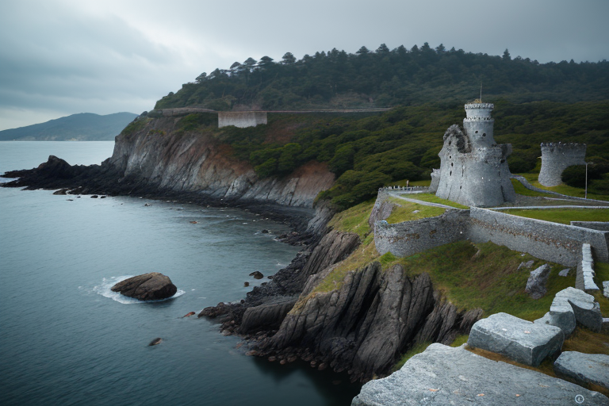
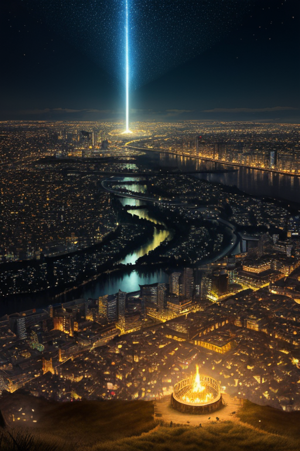
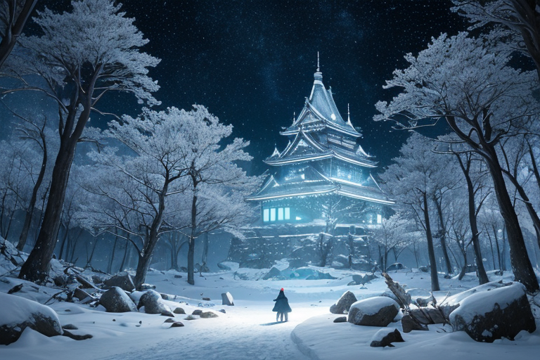
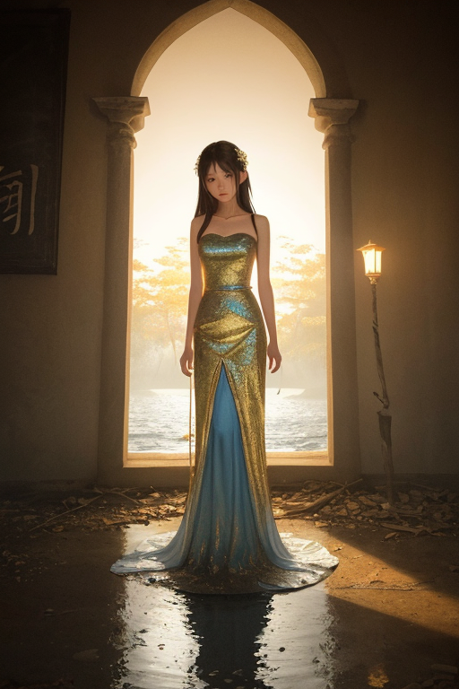
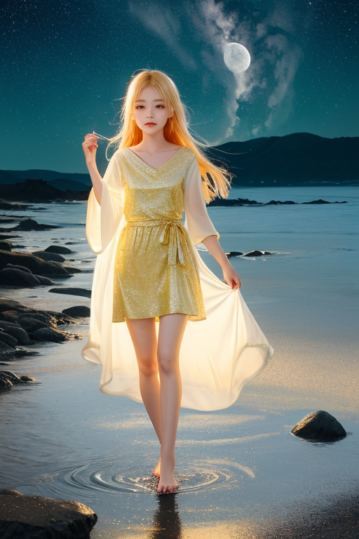

第一章 現実の宮城
あなたはまだ気づいていない。この土地にも、王がいることを。
松島の湾に浮かぶ島々は、静かに朝霧を纏っている。観光船の汽笛が遠くに響き、波が岩肌を洗う音だけが、この静謐な時間を刻む。しかし、その海の底深く、目には見えない巨大な「何か」が封じられている。世界王、ミヤグリア・ルクスは、仙台城跡の石垣の上に佇み、その重い封印を感じ取っていた。彼の王国、ミヤグリア・ルクスの本質は「灯と復興」である。だが今、彼の内側を占めているのは、十二年前のあの日、この地を襲った巨大な津波を、たった数秒遅らせることしかできなかったという自責の念だった。
彼は手のひらをかざす。群青色の光が微かに揺らめき、金の輪が広がる。これは紋章の力、歪みの調整である。しかし、彼の心には灯すべき希望の炎よりも、消し去ることのできなかった現実の冷たさが先にあった。失ったものの大きさの前で、王たる者ですら無力であることを、彼はこの地の塩風よりも鋭く知っていた。

第二章 歪みの兆候
仙台城跡の高台から見下ろす街並みは、確かに再生していた。新たな防潮堤、かさ上げされた土地、夜になれば無数の灯が規則正しく並ぶ。ミヤグリアは、その光の一つひとつを、十二年前に自らが封じ込めた「波」の記憶と重ねて見ていた。歪みの調整、津波封じの結界は、この地の深部に張り巡らされていた。本来、静かに永続するはずの封印が、最近、微かに軋む。
それは蔵王の樹氷が、予期せぬ暖気でほんの少し形を崩すような、かすかな兆候だった。地中を流れる力の脈が、時折、不規則な痙攣を起こす。封じたものは消えたわけではない。圧縮され、蓄積され、別の形で現れようとしているのか。あるいは、この地に満ちる「再生しよう」という人々の強い意志そのものが、静かな封印を揺るがす「歪み」となっているのか。
彼は石巻の港を見つめた。新しい市場の賑わいの奥で、古い傷跡はまだ色濃く残る。失ったものの大きさは変わらない。ならば、この軋みは何の前兆なのか。灯王は、自らの内に湧き上がる不安という、新たな感情を噛みしめた。

第三章 王の葛藤
蔵王の樹氷は、青白い月明かりに照らされ、静寂の彫刻群のようだった。ミヤグリア・ルクスはその冷たい闇の中に立ち、掌に浮かぶ群青色の灯火を見つめていた。灯火の中心には、微かにうねる波紋が封じ込められている。あの日、彼がこの地に封じた津波の「余震」だ。
「このまま封じ続けるべきか」
彼の内側で、二つの声が軋んだ。一つは王としての責務。歪みを調整し、静穏を保つこと。解放すれば、封じられた力は確かに「歪み」を解消するかもしれない。だが、その代償は計り知れない。もう一つは、この地で育まれた新たな感情―「もう二度と、あの日を繰り返したくない」という人々の切実な願い。それは復興の灯であり、同時に、あらゆる波瀾を拒絶する強すぎる「静寂」への希求でもあった。
彼は仙台城跡から望む、無数の七夕飾りが揺れる街を思い浮かべた。絢爛たる願いの裏側に、震災後、津波を題材にした飾りが一つもない事実。失った後に灯すものは、希望であると同時に、忘れたい記憶の封印でもあるのか。
「ルミエラ、私は…何を守り、何を灯せばいい？」
彼の呟きに、灯火の妖精は優しく、しかし確かな光を増幅させた。答えは、まだ灯火の中にしかなかった。

第四章 灯火の記憶
瑞鳳殿の静寂の中で、ルミエラの灯火が微かに揺れた。彼女の声は、松島の潮騒のように静かだった。「王よ、あなたが封じたのは、津波そのものではありません。『もう二度と』という、あまりにも強い人々の絶望の波です」
彼女は、石巻の街が津波に呑まれる直前、数秒の遅延を王が生み出したことを語った。その数秒で、より高い場所へ走れた命があった。しかし、その代償として、王は「完全な防波堤」という不可能な願いを、自らの核に刻み込んでしまった。
「灯すべきは、過去への鎮魂の火だけでしょうか」ツキヒカリが問う。彼女の光は、がれきの山から再建される街並みを、蔵王の樹氷のように、ゆっくりと、しかし確実に映し出していた。「それとも、失ったものと共に生き、再び歩み出す意志そのものの灯火を？」
王は手のひらをかざした。群青色の紋章が、金の灯火を内包して微かに脈打つ。封印の内側で、鎮魂と再生の二つの感情が、ずんだの緑のように絡み合っていた。答えは、まだ一つにはならない。

第五章「微調整と余韻」
松島の湾に、月が静かに映っていた。王は、封印の亀裂から漏れ出す青白い光を、掌の紋章でそっと包み込んだ。微調整とは、このような作業だ。巨大な力を完全に消すことはできない。ただ、その漏れ出す一瞬を、ほんの少し遅らせ、拡がりを一寸狭める。津波の記憶を封じた結界は、人々の「忘れたい」という思いと「忘れてはならない」という思いの、危うい均衡の上に成り立っていた。王はその両方の重さを、自らの内に受け止めた。
「灯すのは、鎮魂の火でも、再生の意志そのものでもなく」王は囁くように言った。「その狭間で、なお揺らめく灯りを、微かに保つことです」
修復は完了した。群青の波紋は再び円を描き、中心の金の灯火は、以前よりほんの少し、熱を帯びて輝いている。それは、王が取り込んだ感情の余熱だった。代償として、彼はこの土地の喪失と希望の混ざり合った「ずんだ」のような感情を、永く背負うことになる。
石巻の新しい堤防の上を、一人の少女が走り抜けていく。彼女の背中には、小さなリュックが揺れていた。その一瞬の風景が、これからも続く日常の、確かな一片であることを、王は静かに見届けた。
あなたの町にも、王がいる。